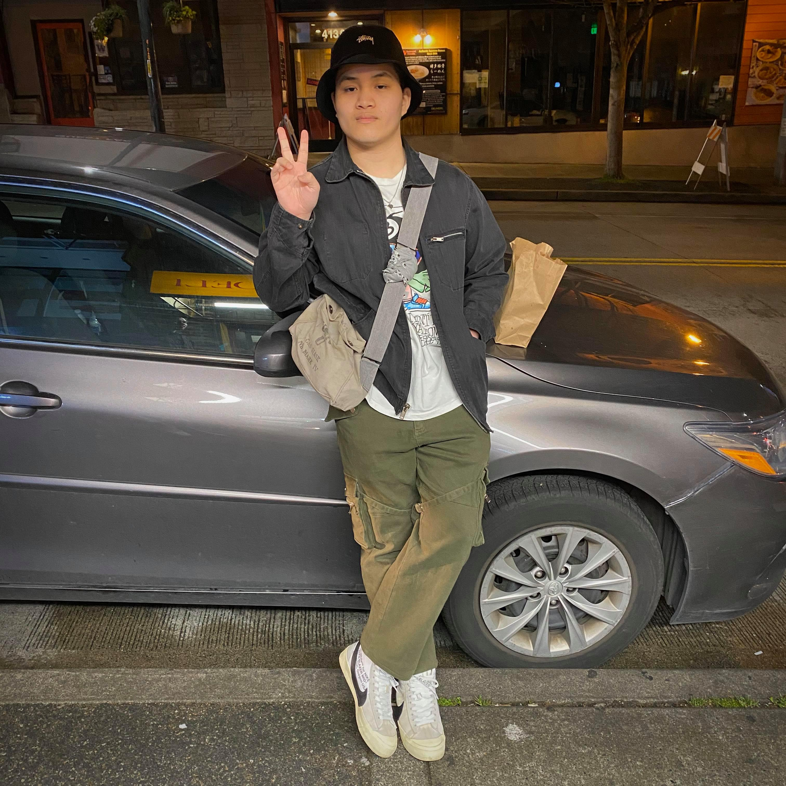

Contact List
| kennethmainguyen@gmail.com | |
| Discord | kinokima (Kenneth)#3924 |
| kennethmnguyen |
I am in my second year at the University of Washington Bothell studying interactive media design mainly. Its something I'm intes If you want to see my digital portfolio, its on kennethmnguyen.com
During this COVID lockdown I've honestly been sleeping for very long times and not being the most productive. Watching a bunch of youtube videos and playing various different games. Glady though I was able to get ahold of some weights so I can still work out during a time where everything is closed.